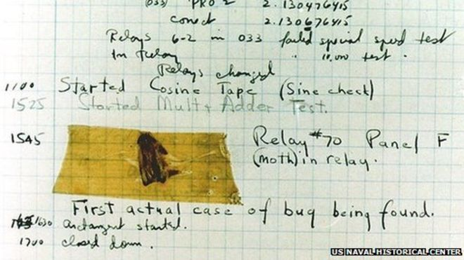

Citations
{kind=link}
History of Software Development
“Software testing is the process of running a program with the intention of finding errors”— Glenford J. Myers.

The Software testing phase is undoubtedly one of the most important parts of any business. The purpose of Software testing is to make sure the product that will be released won't come out with any problems within the software itself. Some refer to these problems as "bugs" within the software.
The First Bug
During the 1940s to 1950s the term “bug” and “debugging” were coined. This term was created after Grace Murray, a Harvard University scientist, noticed that a moth had got stuck in a relay causing it not to make contact thus causing an issue. After this occurrence, Grace Murray went on to take note of this problem onto his work log and went on to tape the same moth that caused this bug onto this log.
During this time of age, software testing was mostly hardware testing as back then the technology was not as advanced as it is in this day of age. It wasn't until 1949 when Alan Turing wrote his first article about carrying out checks on a program. Then in his article“Turing test”, he explains the situation of how software must adapt to the requirements of a project and the behavior of a machine or a reference system must be indistinguishable, which was written in the year 1950.
Later on, in 1957, Charles Baker started to express the need for having a way of ensuring that the software meets the pre-designed requirements and as well for the program's functionality. As testing was becoming more needed within the industry it was also becoming more expensive to have someone test your applications.
In 1979, Glenford J. Myers started to idolize the idea of finding issues within one's program as it was a way to show the program was responding. For some time after Glenford prized this way of testing, this would be the way to test out some problems for some time.
1988 was the year William Hetzel published “The Growth of Software Testing”. he goes on to redefine the concept of testing as the planning, design, construction, maintenance, and execution of tests and test environments.